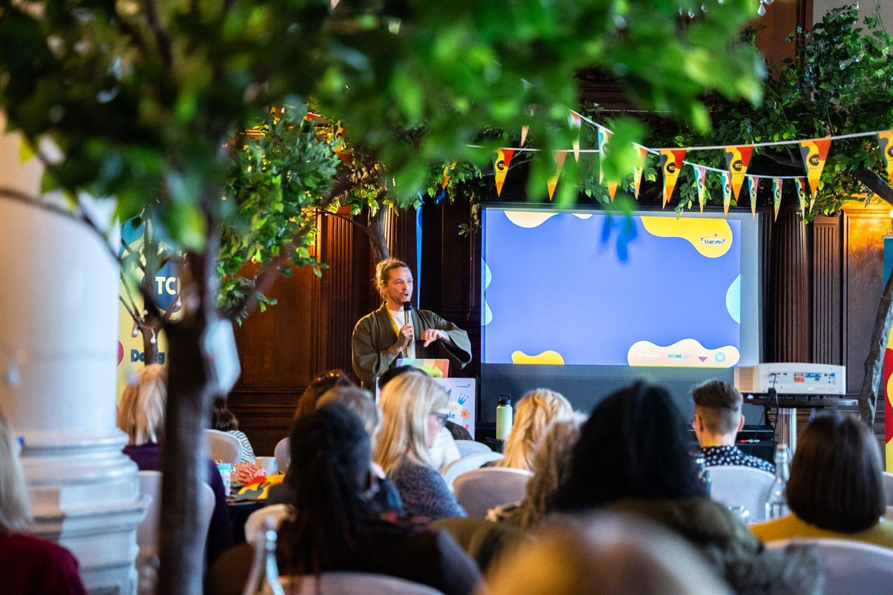
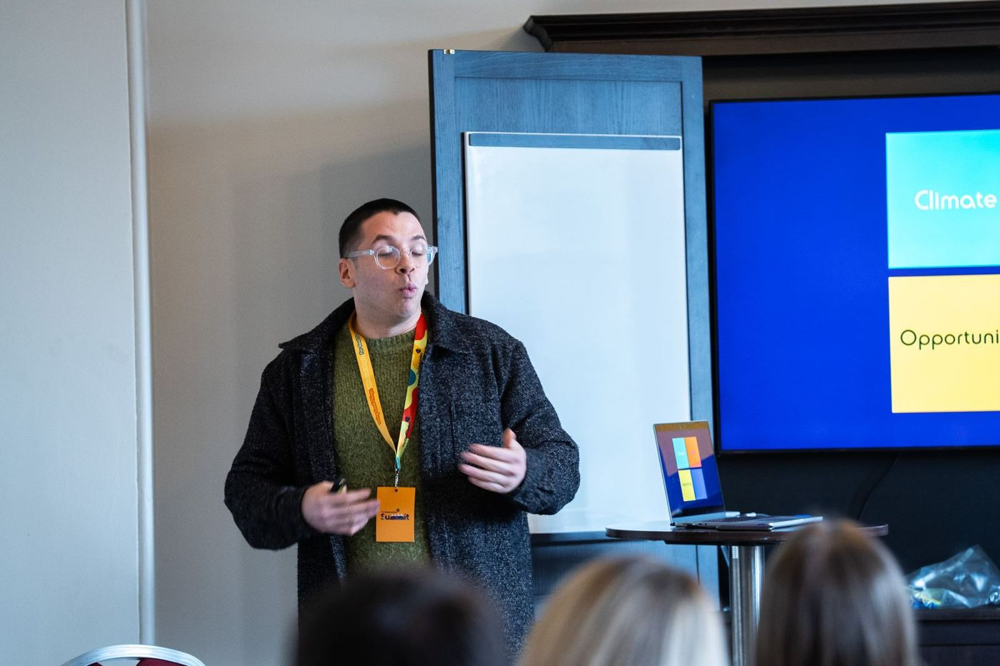
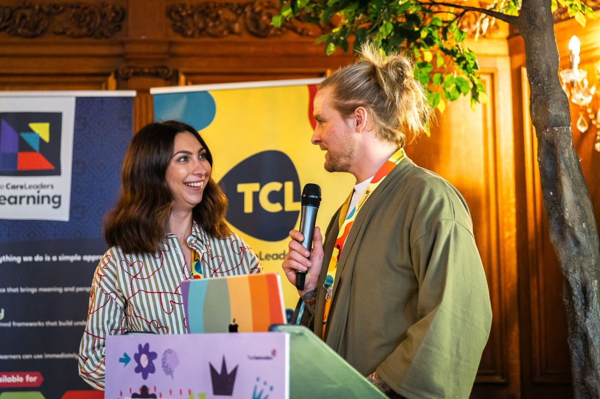
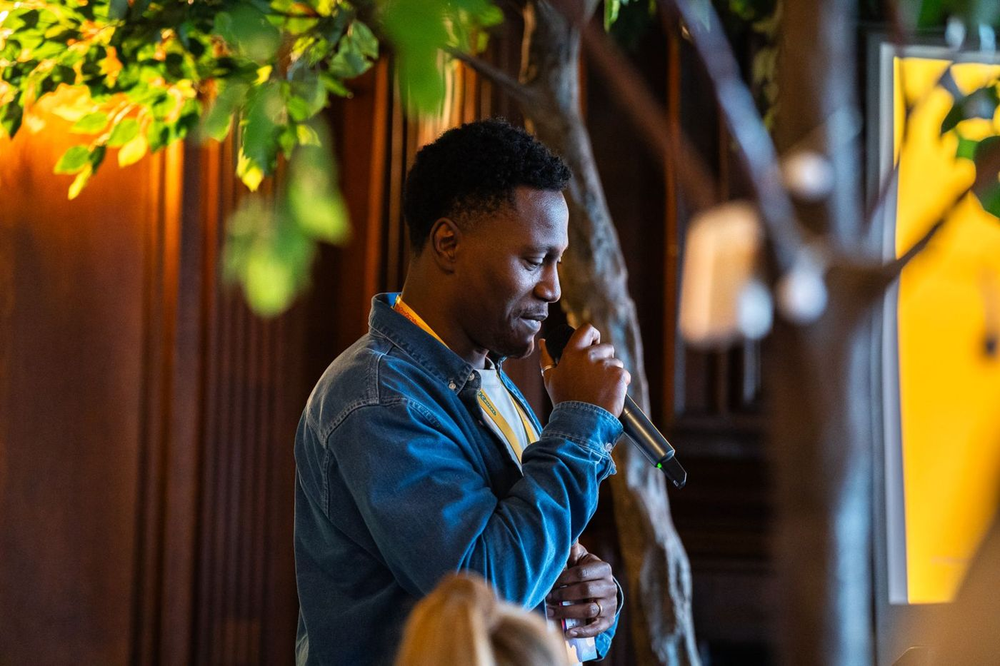

The Care Leaders Summit: a national day with care-experienced leaders at the front
On 26 February 2026 we brought people from councils, virtual schools, charities and businesses together for a day of talks and workshops, many led by Fellows of The Care Leaders Fellowship, followed by an evening meal and live performance.



The starting point
The Summit is our own national event. It brings together the people we work with in councils, virtual schools and charities, alongside Fellows of The Care Leaders Fellowship, for a day of learning and an evening together. The 2026 Summit was a day conference followed by an evening meal, supported by sponsors Become and Madlug CIC.
What we heard
After the day, every delegate received a thank you, a feedback form and an invitation to register interest in the next Summit. Delegates got in touch about The Care Leaders Fellowship. A council contact who couldn’t come wrote that she’d heard it was “an amazing summit”.
“I thought the quality of both content and production values was head and shoulders above many I’ve been to. I really liked your clear model.”
What we did
Plan A project plan of more than 120 tasks covered speakers, delegate packs, seating, workshop allocation and photography. Programme Josh MacAlister OBE gave the ministerial update. Fellows ran a participation workshop and a leadership session, and a Fellow gave the closing keynote, From Surviving to Thriving. Evening The day ended with an evening meal and a bespoke song and live performance. Follow-up Sessions were filmed, and delegates received highlights, a feedback form and first notice of the next Summit.
How we worked
Fellows lead
Care-experienced Fellows of The Care Leaders Fellowship ran sessions and closed the day, rather than appearing on one panel.
Policy and practice together
A ministerial update sat in the same programme as practice-led workshops.
Made to share
Sessions were filmed so the learning could travel beyond the room.
The mix was deliberate for us: our work rests on lived and professional experience leading together, and the Summit put that on one stage.
What changed
The Summit is now part of our plans each year. Work on the next one began in March 2026, and the date and venue are still being decided. Delegates who came have since asked about The Care Leaders Fellowship.
See the work


